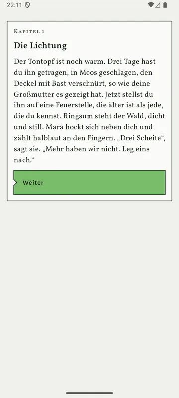
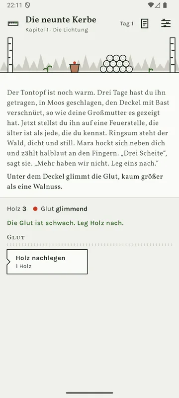
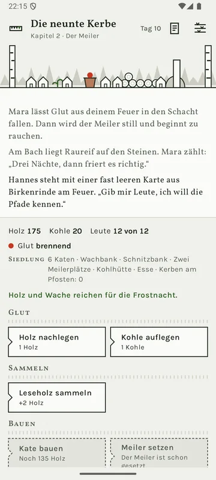
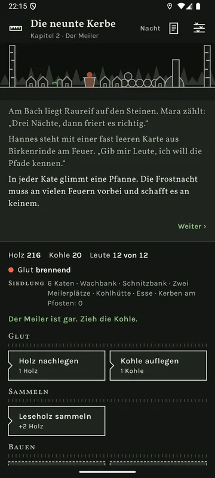
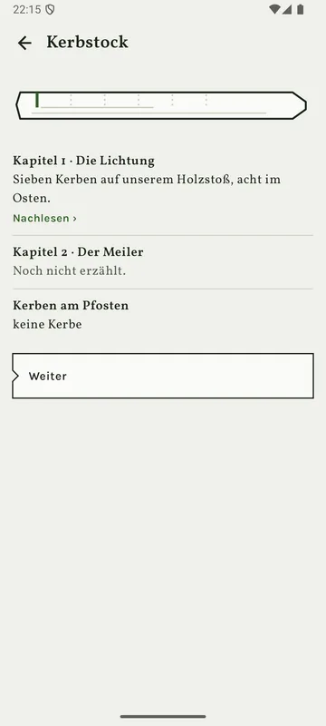
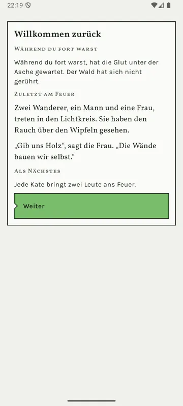

Eine Siedlung wächst um die Glut
Sammle Holz, baue Katen, brenne Holzkohle im Meiler. Aus einer verlassenen Lichtung wird ein Dorf.
Ein ruhiges Textspiel
Trag eine alte Glut in den Wald und finde heraus, was die Kerben zählen.
Erscheint bald bei Google Play
Die neunte Kerbe ist gerade im Test. Sobald das Spiel im Store steht, findest du hier den Link.
Für Android-Handys und -Tablets ab Android 8. Auf Deutsch und Englisch.
Kapitel 1 · Die Lichtung
Der Tontopf ist noch warm. Drei Tage hast du ihn getragen, in Moos geschlagen, den Deckel mit Bast verschnürt, so wie deine Großmutter es gezeigt hat. Jetzt stellst du ihn auf eine Feuerstelle, die älter ist als jede, die du kennst. Ringsum steht der Wald, dicht und still. Mara hockt sich neben dich und zählt halblaut an den Fingern. „Drei Scheite“, sagt sie. „Mehr haben wir nicht. Leg eins nach.“
Unter dem Deckel glimmt die Glut, kaum größer als eine Walnuss.
Das Feuer brennt.
Die Flammen greifen nach dem Scheit. Für einen Atemzug wird die Lichtung weit.
Das Feuer brennt hell.
Der Rauch steigt gerade auf, höher als die Wipfel.
Die Glut ist schwach. Leg Holz nach.
Das Feuer brennt hell genug.
Die ersten Zeilen aus Kapitel 1, wörtlich aus dem Spiel, vereinfacht zum Ausprobieren.
Kein Kampf, keine Hektik. Die Geschichte entsteht aus dem, was du am Feuer tust.
Am Anfang gibt es nur dich, Mara, drei Scheite und eine Glut, kaum größer als eine Walnuss. Halte sie am Leben.
Wer ankommt, baut selbst mit. Du schickst die Leute zum Holzmachen, zur Wache, an den Meiler oder auf die Pfade.
Mit jedem Tag wächst die Siedlung – und die Geschichte erzählt sich Zeile für Zeile weiter, bis ein Kapitel endet.
Sammle Holz, baue Katen, brenne Holzkohle im Meiler. Aus einer verlassenen Lichtung wird ein Dorf.
Mara, die Köhlerin, zählt halblaut an den Fingern. Hannes kehrt nie um, bevor er sein Ziel gesehen hat. Der Alte spricht nur in den Sätzen seines Großvaters. Und die kleine Fenja hört die Bäume atmen. Deine Entscheidungen führen zu einem von drei Enden.
Regen, Frost, ein Meiler, der falsch zieht: Jede Gefahr kündigt sich an, und du hast ein paar Nächte Zeit. Nichts davon ist Zufall. Geht das Feuer doch einmal aus, ist das Spiel nicht vorbei.
Die Wache hütet das Feuer, die Leute tragen weiter zusammen. Nach einer längeren Pause erzählt dir eine Karte, was geschehen ist. Keine Mitteilungen, die dich zurückrufen.
Eine Kerbe je Kapitel – antippen und nachlesen. Das Tagebuch bewahrt jede Zeile der Geschichte, auch über einen Neuanfang hinweg.
„Ruhiges Tempo“: Alles läuft halb so schnell, und das Feuer geht nie ganz aus. Dazu große Schrift, helle und dunkle Darstellung und weniger Bewegung.






Die Geschichte steht im Mittelpunkt. Kurze Sätze, wenige Figuren, ein Rätsel, das sich langsam öffnet.
Vorräte, Einteilung und eine Siedlung, die wächst, während du liest – ohne Spielwährung und Beschleuniger.
Ein paar Minuten am Feuer reichen. Was in der Zwischenzeit passiert ist, erzählt dir das Spiel, wenn du wiederkommst.
Kein Abo, keine Spielwährung, keine Werbung. Gratis anfangen, einmal kaufen.
| Einmaliger KaufKapitel 3 bis 6 und alle drei Enden. Nach dem ersten Ende: „Das nächste Feuer“ und „Harter Winter“. Deine Siedlung bleibt, auch wenn du erst später weiterliest. | 2,99 € |
|---|
Preis in Deutschland, Stand Oktober 2026, vor dem Erscheinen. Verbindlich ist der Preis, den Google Play beim Kauf anzeigt.
Die neunte Kerbe ist im Test. Wenn das Spiel bei Google Play erscheint, steht der Link hier auf der Seite.
Nein, die ganze Geschichte steckt in der App. Nur für den Kauf verbindet sich die Google-Play-Bibliothek mit Google Play.
Nein, bisher nur für Android.
Nein. Das Spiel schickt keine Mitteilungen. Während du fort bist, hütet die Wache das Feuer, und bei der Rückkehr erzählt dir eine Karte, was geschehen ist.
Nein. Kein Konto, keine Werbung, keine Tracker; die App selbst sendet nichts. Spielstand und Tagebuch bleiben auf deinem Gerät. Die Einzelheiten stehen in der Datenschutzerklärung.
Nein. Der Kauf hängt an deinem Google-Konto. Auf dem neuen Gerät holt „Kauf wiederherstellen“ ihn zurück.
Auf Deutsch und Englisch. Die Sprache folgt der Einstellung deines Geräts.
Schreib uns an kontakt@wunderkammer-apps.de – am besten mit Kapitel und Tag, an dem es passiert ist.
So sagt man unten im Tal. Die neunte Kerbe erscheint bald bei Google Play – die ersten zwei Kapitel gratis.